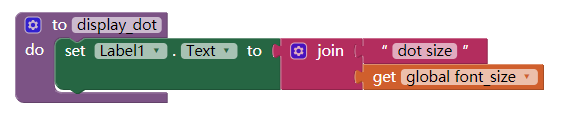

1)The Wikipedia article on refactoring talks about code smell and one motivation for engaging in refactoring. What is code smell? Describe briefly two examples of "code smell" and how refactoring would eliminate them.
Code smell is every characteristic that in the code contain a deeper problem.One example of code smell would be have 2"button click do",because with 2"button clik do",the app can't decide which "button clik do" you want to use.The other example would be "call file save as with no text format,that would be a error because if you save a file with no format,you can't open it.
2)Insert a screenshot of the procedure from your app below.

3)What are the advantages of using procedural abstraction? Name at least 2 advantages.
The advantages of using procedural abstraction are you can create a code that can execute whenever you want.And it reduce the complexity of your codes.